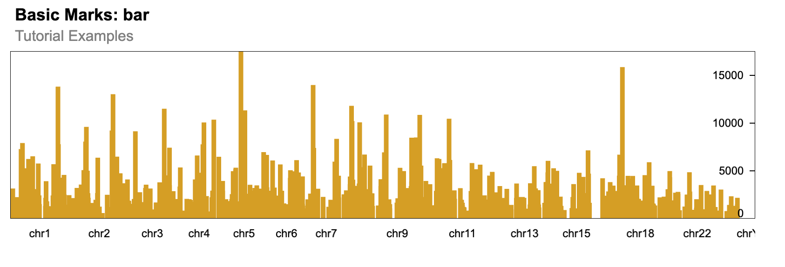

2. Using a GRanges object in shiny.gosling
GRanges.RmdCall required libraries.
require(shiny.gosling)
#> Warning in fun(libname, pkgname): Package 'shiny.gosling' is deprecated and will be removed from
#> Bioconductor version 3.24
require(shiny)
require(GenomicRanges)Getting a sample data for the GRanges object
We will be loading the peaks data from ChipSeq dataset with the GEO accession GSM1295076
GSM1295076_CBX6_BF_ChipSeq_mergedReps_peaks.bed.gz file
will be used to create a sample GRanges object.
url <- paste0(
"https://www.ncbi.nlm.nih.gov/geo/download/",
"?acc=GSM1295076&format=file&file=GSM1295076_CBX6_BF_ChipSeq_mergedReps_peaks.bed.gz"
)
temp_file <- file.path(tempdir(), "data.gz")
download.file(url, destfile = temp_file, method = "auto", mode = "wb")
df <- read.delim(
temp_file,
header = FALSE,
comment.char = "#",
sep = ""
)
gr <- GRanges(
seqnames = df$V1,
ranges = IRanges(df$V2, df$V3)
)
gr
#> GRanges object with 1331 ranges and 0 metadata columns:
#> seqnames ranges strand
#> <Rle> <IRanges> <Rle>
#> [1] chr1 815092-817883 *
#> [2] chr1 1243287-1244338 *
#> [3] chr1 2979976-2981228 *
#> [4] chr1 3566181-3567876 *
#> [5] chr1 3816545-3818111 *
#> ... ... ... ...
#> [1327] chrX 135244782-135245821 *
#> [1328] chrX 139171963-139173506 *
#> [1329] chrX 139583953-139586126 *
#> [1330] chrX 139592001-139593238 *
#> [1331] chrY 13845133-13845777 *
#> -------
#> seqinfo: 24 sequences from an unspecified genome; no seqlengthsUsing the GRanges object for a plot using shiny.gosling
Method 1 - Using the track_data_gr function
You can use the track_data_gr to pass the
GRanges object inside a track.
Note: Make sure to run the Shiny app using the
shiny::runApp() rather than interactively running the
shiny::shinyApp() object.
ui <- fluidPage(
use_gosling(clear_files = FALSE),
goslingOutput("gosling_plot")
)
track_1 <- add_single_track(
width = 800,
height = 180,
data = track_data_gr(
gr, chromosomeField = "seqnames",
genomicFields = c("start", "end")
),
mark = "bar",
x = visual_channel_x(
field = "start", type = "genomic", axis = "bottom"
),
xe = visual_channel_x(field = "end", type = "genomic"),
y = visual_channel_y(
field = "width", type = "quantitative", axis = "right"
),
size = list(value = 5)
)
composed_view <- compose_view(
layout = "linear",
tracks = track_1
)
arranged_view <- arrange_views(
title = "Basic Marks: bar",
subtitle = "Tutorial Examples",
views = composed_view
)
server <- function(input, output, session) {
output$gosling_plot <- renderGosling({
gosling(
component_id = "component_1",
arranged_view
)
})
}
shiny::shinyApp(ui, server)Method 2 - Using the track_data_csv function
You can save the GRanges object as a csv
file inside the www directory which can be used in the shiny.gosling
plot.
if (!dir.exists("data")) {
dir.create("data")
}
utils::write.csv(gr, "data/ChipSeqPeaks.csv", row.names = FALSE)
track_1 <- add_single_track(
width = 800,
height = 180,
data = track_data_csv(
"data/ChipSeqPeaks.csv", chromosomeField = "seqnames",
genomicFields = c("start", "end")
),
mark = "bar",
x = visual_channel_x(
field = "start", type = "genomic", axis = "bottom"
),
xe = visual_channel_x(field = "end", type = "genomic"),
y = visual_channel_y(
field = "width", type = "quantitative", axis = "right"
),
size = list(value = 5)
)
composed_view <- compose_view(
layout = "linear",
tracks = track_1
)
arranged_view <- arrange_views(
title = "Basic Marks: bar",
subtitle = "Tutorial Examples",
views = composed_view
)
shiny::shinyApp(ui = fluidPage(
use_gosling(clear_files = FALSE),
goslingOutput("gosling_plot")
), server = function(input, output, session) {
output$gosling_plot <- renderGosling({
gosling(
component_id = "component_1",
arranged_view
)
})
}, options = list(height = 1000))
Session Info
sessionInfo()
#> R version 4.5.3 (2026-03-11)
#> Platform: x86_64-pc-linux-gnu
#> Running under: Ubuntu 24.04.4 LTS
#>
#> Matrix products: default
#> BLAS: /usr/lib/x86_64-linux-gnu/openblas-pthread/libblas.so.3
#> LAPACK: /usr/lib/x86_64-linux-gnu/openblas-pthread/libopenblasp-r0.3.26.so; LAPACK version 3.12.0
#>
#> locale:
#> [1] LC_CTYPE=C.UTF-8 LC_NUMERIC=C LC_TIME=C.UTF-8
#> [4] LC_COLLATE=C.UTF-8 LC_MONETARY=C.UTF-8 LC_MESSAGES=C.UTF-8
#> [7] LC_PAPER=C.UTF-8 LC_NAME=C LC_ADDRESS=C
#> [10] LC_TELEPHONE=C LC_MEASUREMENT=C.UTF-8 LC_IDENTIFICATION=C
#>
#> time zone: UTC
#> tzcode source: system (glibc)
#>
#> attached base packages:
#> [1] stats4 stats graphics grDevices utils datasets methods
#> [8] base
#>
#> other attached packages:
#> [1] GenomicRanges_1.62.1 Seqinfo_1.0.0 IRanges_2.44.0
#> [4] S4Vectors_0.48.1 BiocGenerics_0.56.0 generics_0.1.4
#> [7] shiny_1.13.0 shiny.gosling_1.7.2
#>
#> loaded via a namespace (and not attached):
#> [1] jsonlite_2.0.0 compiler_4.5.3 promises_1.5.0 Rcpp_1.1.1-1
#> [5] later_1.4.8 jquerylib_0.1.4 systemfonts_1.3.2 textshaping_1.0.5
#> [9] yaml_2.3.12 fastmap_1.2.0 mime_0.13 R6_2.6.1
#> [13] knitr_1.51 htmlwidgets_1.6.4 desc_1.4.3 bslib_0.10.0
#> [17] rlang_1.2.0 stringi_1.8.7 cachem_1.1.0 httpuv_1.6.17
#> [21] xfun_0.57 fs_2.1.0 sass_0.4.10 shiny.react_0.4.0
#> [25] otel_0.2.0 cli_3.6.6 pkgdown_2.2.0 magrittr_2.0.5
#> [29] digest_0.6.39 xtable_1.8-8 lifecycle_1.0.5 glue_1.8.1
#> [33] evaluate_1.0.5 ragg_1.5.2 rmarkdown_2.31 tools_4.5.3
#> [37] htmltools_0.5.9